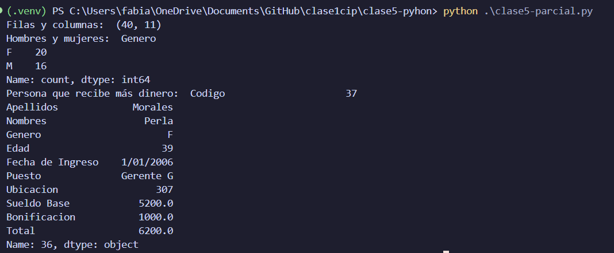
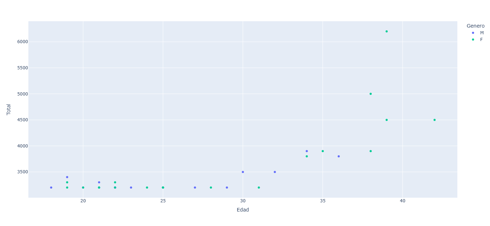

Examen practico
Lee el dataframe y realiza los siguientes ejercicios: - Indica el numero de filas y columnas - Cambia el nombre de las columnas - ¿Cuantos hombres y mujeres hay? - ¿Quíen es la persona que recibe más dinero? - Realiza una de las gráficas posibles al usar Matplotlib o Plotly y escribe un parrafo interpretando los resultados.
import pandas as pd
df = pd.read_csv("datos.csv")
print("Filas y columnas: ", df.shape)
df.columns = ['Codigo', 'Apellidos', 'Nombres', 'Genero', 'Edad', 'Fecha de Ingreso', 'Puesto', 'Ubicacion', 'Sueldo Base', 'Bonificacion', 'Total']
print("Hombres y mujeres: ", df['Genero'].value_counts())
print("Persona que recibe más dinero: ", df.loc[df['Total'].idxmax()])
import plotly.express as px
fig = px.scatter(df, x='Edad', y='Total', color='Genero')
fig.show()
Resultados:
Ejecución del código:

Gráfica generada y analisis:
En la gráfica se puede observar que las mujeres tienen un sueldo base mayor que los hombres, sin embargo, los hombres tienen una bonificación mayor que las mujeres.
